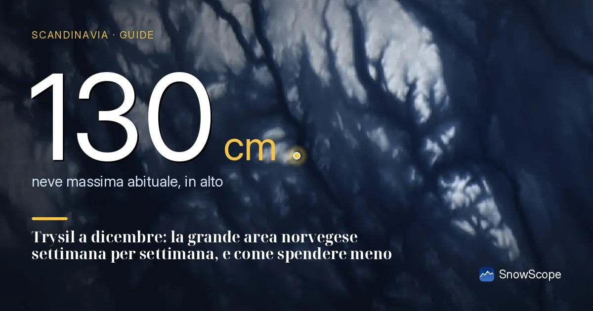

Trysil a dicembre: la grande area norvegese settimana per settimana, e come spendere meno
Il numero chiave: in un tipico 15 dicembre Trysil ha 44 cm di neve a metà montagna (758 m) nei nostri 46 inverni di storico, e l'83 % degli inverni aveva lì almeno 30 cm nella settimana dal 15 al 21 dicembre. Un dicembre solido per il comprensorio più grande della Norvegia, con 101 km di piste mappate e 40 impianti.
Le previsioni neve in tempo reale per Trysil nell'app SnowScopeAltezza neve, allerte powder e mappa 3D, gratis.
Inizio dicembre
La prima settimana è la più debole. Dall'1 al 7 dicembre solo il 57 % dei nostri inverni aveva 30 cm a metà montagna, e il 30 % in basso (407 m). La vetta (1109 m) è più sicura, al 76 %. Così a nord le giornate di dicembre sono brevi: mettete in conto meno ore sulle piste e più sul divano.


Metà dicembre
Dal 15 al 21 dicembre il quadro è buono: 83 % degli inverni con 30 cm a metà montagna e 89 % in vetta. Un tipico 15 dicembre ha 26 cm in basso, 44 cm a metà montagna e 60 cm in vetta. Anche un anno magro (1 su 10) conserva 21 cm a metà montagna.
La settimana di Natale
La settimana di Natale è la migliore del mese: l'87 % degli inverni aveva 30 cm a metà montagna e il 93 % in vetta, e il 59 % aveva 60 cm o più in alto. Il fondo recupera tardi: il primo giorno abituale con 30 cm lì è il 18 dicembre.
Ieri e oggi
La media di dicembre a metà montagna è scesa da 52 cm nei primi 15 inverni a 41 cm negli ultimi 15, e la quota di settimane di Natale con 30 cm in basso è calata dall'87 % al 60 %. In alto ha tenuto meglio: 100 % e 87 %.
L'inverno scorso mostra le due facce: 62 cm in vetta il 15 dicembre, ma solo 4 cm in basso il 24 dicembre.
Il conto
Trysil vende gli skipass a prezzi dinamici nello shop online ufficiale del gestore: il prezzo dipende dalla data e da quanto prima si compra. Il 13 novembre 2026 non siamo riusciti a leggere un importo fisso sulla pagina ufficiale, quindi non ne citiamo. La regola con questi prezzi è semplice: comprare online, presto e per date fuori dalle vacanze di Natale.
Contro Sälen
Sälen, oltre il confine in Svezia, è l'altra grande scelta di dicembre per le famiglie. È più bassa e più piatta: il nostro storico dà un solo valore per tutta l'area, 28 cm in un tipico 15 dicembre, e il 48 % degli inverni con 30 cm nella settimana dal 15 al 21 dicembre. La metà montagna di Trysil fa chiaramente meglio, la vetta ancora di più.
Consigli per sciatori
- Scegliete dal 15 al 21 dicembre o la settimana di Natale: la quota di inverni con 30 cm a metà montagna sale dal 57 % della prima settimana all'83 % e all'87 %.
- Comprate lo skipass online il prima possibile; con i prezzi dinamici gli acquisti tardivi per date richieste costano di più.
- Mettete in conto giornate brevi: partite con la prima luce e fate una pausa pranzo corta.
- Vestitevi per il freddo vero: dicembre nell'interno della Norvegia può essere gelido.
Altre mappe (siti esterni)
Riferimenti e crediti
- Trysil: official lift-pass page of the operator (prices by date; no fixed price quoted), checked 13 November 2026 www.skistar.com/en/winter/skipass/buy-skipass/lift-pass-trysil/
- Sälen: official lift-pass page of the operator (prices by date; no fixed price quoted), checked 13 November 2026 www.skistar.com/en/winter/skipass/buy-skipass/lift-pass-salen/
Su questi numeri
Numeri della neve: storico neve SnowScope, 46 inverni passati (1980-81 - 2025-26) alle quote della località, corretto per la quota (una stima per un'area, non i bollettini della località); "buona neve" = 30 cm o più al suolo in media nella settimana. Mappa: la nostra altezza abituale al 15 dicembre distribuita sul terreno secondo la quota. Piste e impianti: mappatura OpenSkiMap. Skipass: listini ufficiali delle località, verificati il 13 novembre 2026; i prezzi possono cambiare.
Bollettini valanghe ufficiali: Varsom (NVE)
Cita questo articolo
Per ricerca, didattica o stampa: numeri e grafici sono liberamente riutilizzabili con licenza CC BY 4.0 citando così.
SnowScope (2026), Trysil a dicembre: la grande area norvegese settimana per settimana, e come spendere meno, https://snowscope.app/blog/it/2026/11/trysil-december-skiing-norway-budget-dark-days.html, consultato il 2026-11-14
SnowScope (Atlas Labs). (2026, November 14). Trysil a dicembre: la grande area norvegese settimana per settimana, e come spendere meno. SnowScope snow reports. https://snowscope.app/blog/it/2026/11/trysil-december-skiing-norway-budget-dark-days.html
BibTeX
@misc{snowscope2026trysildecemberskiingnorw,
author = {{SnowScope (Atlas Labs)}},
title = {Trysil a dicembre: la grande area norvegese settimana per settimana, e come spendere meno},
year = {2026},
month = nov,
howpublished = {\url{https://snowscope.app/blog/it/2026/11/trysil-december-skiing-norway-budget-dark-days.html}},
note = {Published 2026-11-14 13:29 UTC; accessed 2026-11-14}
}· CC BY 4.0 · Metodi, dati e strumenti →
Trysil: neve e temperatura per quota, quest'inverno vs lo scorso (strumenti) →
Segui Trysil
Gratis: un messaggio quando arriva la neve e il meteo ogni mattina.
Altri bollettini neve

Gli impianti di Saas-Fee raggiungono i 3.556 m, dove la nostra storia della neve mostra che il 100 % degli inverni passati ha almeno 30 cm di neve entro metà dicembre.

Puy-Saint-Vincent offre uno skipass giornaliero adulto a 44 EUR con buona neve a dicembre in quota, confrontato qui con il grande vicino Serre Chevalier.